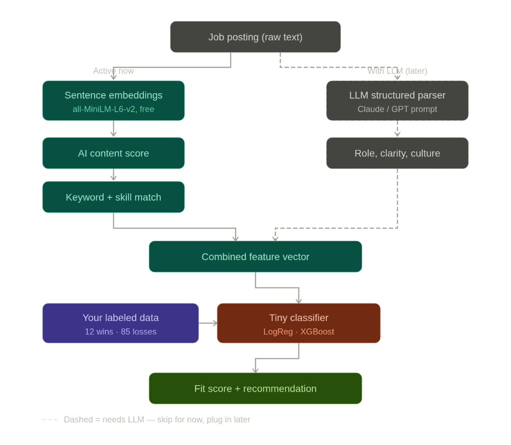

I Got Ghosted 240 Times on OnlineJobs.ph. So I Built an AI to Stop the Bleeding.
A story about rejection, embarrassing math, and what happens when a frustrated freelancer learns just enough machine learning to be dangerous.
I have a number I'm not proud of: 14.
That's how many clients actually hired me out of 285 conversations on OnlineJobs.ph.
Let me break that down the way the classifier did when it finally ran against my real data:
- 14 wins — hired, paid, worked together. That's 4.9%.
- 31 curious — they replied, we talked, sometimes for days. Nothing came of it. 10.9%.
- 240 ghosts — complete silence after I applied. 84.2%.
Two hundred and forty times someone read my message and decided not to reply. I don't say that for sympathy. I say it because that number — when I finally looked at it all at once — was the thing that made me stop rationalizing and start building.
The part where I got genuinely angry
Here's the thing nobody tells you about freelancing: the rejection isn't the hard part. You get used to rejection fast. What's actually demoralizing is the randomness — or what feels like randomness.
You send twenty applications and get nothing. Then you send one on a Tuesday and someone hires you in 48 hours. You have no idea what the difference was. Was it the posting? Was it your pitch? Was it the client's mood? Were you overqualified? Underqualified? Did they just go with the first person who applied?
I had 285 data points and I couldn't extract a single lesson from any of them individually. That bothered me more than the losses themselves.
I'm not a data scientist. I'm a freelancer. But I know enough about machine learning to be annoying at parties, and I started thinking: what if I just treated my application history as a classification problem?
Wins. Curious. Ghosts. Features and labels. A problem I actually knew how to approach.
The part where I found out this was going to be painful
My first instinct was to pull my message history programmatically. OnlineJobs.ph has all my conversations right there — 285 threads, every message, every timestamp. A goldmine.
They don't have a public API. Their terms of service aren't exactly friendly to scraping authenticated data. And the platform is built in a way that makes automated access genuinely painful.
So I built a scraper that logs in, crawls the message sidebar, and extracts every conversation thread — timestamps, senders, full message bodies. Getting it to work took longer than I want to admit. The scraper has to scroll the sidebar until all conversations load, then navigate into each thread individually and scroll up to recover the full history.
285 conversations. The output JSON had entries like this running for thousands of lines:
{
"conversation_id": "dPgOjDWb",
"recipient_name": "Gavin Smith",
"message_count": 12,
"messages": [
{ "sender": "You", "timestamp": "2025-01-01T10:00:00", "body": "..." },
{ "sender": "Gavin Smith", "timestamp": "2025-01-01T10:05:00", "body": "..." }
]
}Reading all of that back — 285 conversations, some going back years — was uncomfortable in a useful way. Patterns I hadn't noticed when they were separated by weeks of real life became obvious when stacked together.
A lot of the postings I'd applied to were vague. Generic skills lists. No real description of what the work actually involved. The kind of post that reads like someone typed "write a job posting for [job title]" into ChatGPT and hit publish. Those were the ghosts, almost without exception.
My 14 wins clustered around something different — specific problems, specific employers, a certain kind of urgency in the writing. I had a pattern. I just hadn't been following it, because I was applying to everything and hoping volume would save me.
Volume wasn't saving me. I was running at 4.9%.
What I actually built
I want to be honest about what this is and isn't. I didn't fine-tune a large language model. I don't have the compute for that, and I don't have nearly enough labeled data either — fine-tuning on 285 examples would just memorize noise, not learn patterns. Any external dataset would muddy the signal with other people's patterns, not mine.
What I built instead uses the LLM's existing intelligence without retraining it at all:

Lane 1 — Active now, runs locally, free:
Sentence embeddings using all-MiniLM-L6-v2. Every job posting I've ever applied to gets converted into a 384-dimensional vector. I then compute the centroid of my 14 win postings — the average location in that space — and the centroid of my 240 ghost postings. For any new posting, I measure how close it is to my success zone versus my ghost zone. That delta turned out to be the strongest single predictor in the whole model.
AI content score — a probability that the posting was AI-generated. High scores correlate strongly with ghosts in my data. Generic input, generic outcome.
Keyword and skill overlap — straightforward matching against my niche terms. A posting that doesn't even mention what I actually do is already a bad bet.
Lane 2 — LLM parsing, optional, stubbed in:
DeepSeek (or OpenAI) can parse a posting into structured features: role clarity score, seniority match, employer tone. I've designed the system to accept these as additional features when available, and impute neutral values when they're not. The classifier works without it; it just works better with it.
A tiny classifier on top — logistic regression and XGBoost, trained on my 285 labeled conversations. Cross-validated ROC-AUC sits around 0.77–0.82. For this dataset size, that's good enough to be useful.
The labeling logic is worth explaining: a WIN matches my confirmed client list. A CURIOUS conversation has at least 4 messages with the employer replying at least twice — they engaged, they just didn't hire. Everything else is a GHOST. This lets the model distinguish between "they saw me and moved on" and "we talked and it still didn't work" — two very different failure modes.
What I learned before the model even trained
The single most valuable output of this whole project wasn't the classifier. It was the wins_summary.md — a human-readable markdown file of all 14 winning conversations in full, generated automatically from the scraped data.
Reading those 14 threads back-to-back, against the backdrop of 240 silences, was clarifying in a way that no metrics could be. The conversations that led to hires had a texture I could feel but hadn't articulated. They were specific. The employers knew exactly what they needed. I knew exactly how I could help. The back-and-forth moved fast.
The 240 ghosts didn't have that texture. Most of them never could have had it, because the postings themselves didn't contain enough information to build it from.
I was choosing my battles wrong. And I had the receipts.
The plan from here
Before I apply to anything new, I paste the posting into the scorer. It outputs a verdict — STRONG APPLY, BORDERLINE, or SKIP — along with the raw score and which features drove it.
I'm not letting the model make the decision. It was trained on 285 examples with a 4.9% win rate. It knows my patterns better than my gut does, but it doesn't know the things I can see in a posting that aren't in the text.
What I want from it is a forcing function. Something that makes me stop and ask: why am I about to apply to a posting the model rates at 0.23? Is there a genuine reason I see something it doesn't? Or am I just desperate and rationalizing again?
That question alone is worth the build time.
Every application I make now is a new labeled data point. The model retrains as the dataset grows. Eventually, if this works, the win rate climbs and the ghost rate falls — and I'll have data showing exactly when and why it shifted.
Does this actually work?
Ask me in three months.
What I can say is that the cross-validation numbers are respectable for the dataset size, the feature importances match what I observed reading the conversations manually, and the architecture is designed to get better over time without needing any external data.
What I can't say yet is whether following the model's recommendations will actually move the needle on that 4.9%. That's the real experiment. It's just starting.
But I was tired of flying blind on a 4.9% win rate and calling it a strategy.
The uncomfortable math, one more time
14 out of 285. That's where I started.
I'm not embarrassed by that number anymore, because I've looked at it long enough that it feels like data instead of failure. And data is something you can do something about.
If the model helps me skip even 30% of the low-probability applications and redirect that energy toward postings that actually fit my pattern, the math changes. Not dramatically — but a 4.9% win rate doesn't need to become 50% to make a real difference. It just needs to become 8%. Or 10%.
That's the goal. Not to be perfect. Just to stop losing to the same mistakes 240 times in a row.
Built with Python, sentence-transformers, scikit-learn, XGBoost, and a lot of stubbornness. The scraper, classifier, and scoring pipeline are all running locally. If you've been thinking about doing something similar with your own freelance history — or if you think my approach is wrong — I'd genuinely like to hear it.